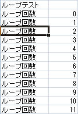

目次
基本ルール
- 制御文は必ず「A列」に書いて下さい。他の列に書くと、通常のセルの値としてそのまま出力されます。
- 「A列」に制御文がある場合、その行の「B列」以降は出力されません。
- ブロック要素は必ず「#end」で閉じる必要があります。
foreach
取得したデータの一覧をExcelに出力する場合などに使います。ブロック要素なので、必ず「#end」で閉じる必要があります。
構文
#foreach var : list index=indexname max=maxrowcount [繰り返す行] #end
- list
- 要素の集合データの名前です。データはListと配列をサポートしています。
- var
- 上記listの各要素を受け取る変数名です。
- indexname
- ループ内で参照する、ループインデックス名です。0スタートになります。 これは必須ではありません。 指定しない場合、「index」で参照する事が出来ます。
- maxrowcount
- ループの最大回数です。データの件数がこれに満たない場合、満たすまで空データを埋め込んだ行を出力します。 これは必須ではありません。指定しない場合はデータ件数通りの行数を出力します。
例
基本的な例
テンプレートを作ります。
.NET側でデータを設定します。
public class Foo{
public string Name { get; set; };
public int Num { get; set; };
}
IDictionary<string, object> data = new Dictionary<string, object>();
IList<Foo> list = new List<Foo>();
list.Add(new Foo(){ Name="1行目", Num=10 } );
list.Add(new Foo(){ Name="2行目", Num=20 } );
list.Add(new Foo(){ Name="3行目", Num=30 } );
list.Add(new Foo(){ Name="1行目", Num=10 } );
list.Add(new Foo(){ Name="2行目", Num=20 } );
list.Add(new Foo(){ Name="3行目", Num=30 } );
data["fooList"] = list;
この場合、出力ファイルは以下の様になります。
ループインデックスの省略
「index=idx」を省略する事が出来ます。その場合、ループインデックスは「index」という名前で参照します。
出力結果は同じです。
ループのネストと注意
ループはネストする事が出来ます。その場合、ループ内でループインデックスを参照する場合は、必ず各ループで「index=」を指定して下さい。 指定しないと、ネストしたループでインデックスが共有されてしまうからです。
ループインデックスを参照する必要がない場合は、省略しても構いません。
最大出力行数の指定
「max=maxrowcount」を書くと、データ件数が指定した行数に満たない場合、空行を出力する事が出来ます。 罫線など書式をともなった行数固定の表などを出力するのに有効です。
テンプレートにこう書いた場合、出力されるファイルは以下の様になります。
最大出力行数と改ページの連携
「max=maxrowcount」を指定し、「#pageBreak」を書いて改ページを指定した場合、 最大行数はページ単位で判定されます。
例えば、以下のようなテンプレートを書きます。
「max=5」を指定すると同時に、5行ごとに改ページするようになっています。
データが6件あった場合、出力されるファイルは以下のようになります。
データ件数が6件で、本来ならば「max=5」を超えているので空行は出力されませんが、 5行ごとに改ページしているため、2ページ目の件数は2行と判断され、4行の空行が出力されています。
なお、この連携は「#pageBreak」を用いた改ページのみに対応しており、 EXCELのページ設定による改ページとは連携しません。
hforeach
取得したデータの一覧をExcelに出力する場合などに使います。 foreachと違い、横に展開します。 ブロック要素なので、必ず「#end」で閉じる必要があります。
構文
#hforeach var : list index=indexname cols=colcount [繰り返す行] #end
- list
- 要素の集合データの名前です。データはListと配列をサポートしています。
- var
- 上記listの各要素を受け取る変数名です。
- indexname
- ループ内で参照する、ループインデックス名です。0スタートになります。 これは必須ではありません。 指定しない場合、「index」で参照する事が出来ます。
- colcount
- 繰り返しの対象となる列数を指定します。 これは必須ではありません。指定しない場合、ブロック内の最大列数までが繰り返しの対象となります。
例
テンプレートを作ります
「#hforeach」を任意の列に書きます。その列からcolcountで指定された列数がまとめて横に展開されます。 上の例の場合、「金額一覧」と「月」の列はタグより左にあるため、繰り返されません。
.NET側でデータを用意します。
public class Data
{
public int AmountA { get; set; }
public int AmountB { get; set; }
public int AmountC { get; set; }
public int AmountD { get; set; }
public int Month { get; set; }
}
IList<Data> list = new List<Data>();
list.Add(new Data(){ Month=1, AmountA=10, AmountB=20, AmountC=30, AmountD=40 });
list.Add(new Data(){ Month=2, AmountA=12, AmountB=21, AmountC=31, AmountD=50 });
list.Add(new Data(){ Month=3, AmountA=14, AmountB=19, AmountC=32, AmountD=60 });
list.Add(new Data(){ Month=4, AmountA=16, AmountB=18, AmountC=33, AmountD=70 });
IDictionary<string, object> data = new Dictionary<string, object>();
data["list"] = list;
この場合、出力ファイルは以下のようになります。

while
配列やリストなどのイテレータを使わないで、任意の条件でループを回したい場合は、「#while」を使います。
構文
#while [条件式] [出力する行] #end
条件式がtrueである間、ループが継続されます。条件式はOGNLで評価されます。
例
テンプレートを作ります。 「#var」と「#exec」を併用します（これらについてはスクリプト実行も参照して下さい）。

このテンプレートは特にデータを必要としないので、データなしでそのまま出力します。結果は以下になります。
if
ある条件によって、行の出力をする場合に使います。 ブロック要素なので、必ず「#end」で閉じる必要があります。
構文
#if [条件式] [出力する行] #else if [条件式] [出力する行] #else [出力する行] #end
条件式はOGNLで評価されます。条件式は「#if (hoge == 0)」のように、カッコで括っても構いません。「#else if」と「#else」は任意です。
pageBreak
この位置に改ページを挿入します。「#pageHeader」か「#pageFooter」が指定されている場合は、それぞれを出力します。
例
ここでは、後述するpageHeaderStartとpageFooterStartと合わせて使用してみます。
テンプレートにこのように記述するとします。
4行ごとに改ページを強制的に挿入するようになっており、ヘッダとフッタを指定してあります。
データを埋め込むとこうなります。
pageHeaderStart
「#pageBreak」により改ページが挿入された際に、ヘッダとして出力されるブロックを指定します。 ブロック要素なので、必ず「#end」で閉じる必要があります。
EXCELの印刷設定により改ページした場合には出力されません。 また、ここでのヘッダとは通常のセルの事ですので、EXCELの印刷設定でのヘッダ設定とは関係りません。
構文
#pageHeaderStart [出力する行] #end
ヘッダは1つのシートに1つだけ指定する事が出来ます。 ある条件でヘッダの内容を変えたい場合は、ブロック内でifを使って切り替えます。
例えば、偶数ページと奇数ページでヘッダを切り替える場合は下記のように記述します。
#pageHeaderStart #if(page.pagenum%2 == 0) [奇数ページに出力する行] #else [偶数ページに出力する行] #end #end
pageFooterStart
「#pageBreak」により改ページが挿入された際に、フッタとして出力されるブロックを指定します。 ブロック要素なので、必ず「#end」で閉じる必要があります。
EXCELの印刷設定により改ページした場合には出力されません。 また、ここでのフッタとは通常のセルの事ですので、EXCELの印刷設定でのフッタ設定とは関係ありません。
構文
#pageFooterStart [出力する行] #end
フッタは1つのシートに1つだけ指定する事が出来ます。ある条件でフッタの内容を変えたい場合は、pageHeaderStartと同様に、ifで切り替えます。 詳細はpageHeaderStartを参照して下さい。
スクリプト実行
テンプレート上で、変数を宣言したり、OGNLスクリプトを書く事が出来ます。
変数宣言
変数宣言には、「#var」を使います。
#var hoge, foo, bar
カンマで区切る事で複数の変数を宣言出来ます。
また、宣言と同時に初期値を指定する事も出来ます。
#var hoge, foo=0, bar = 'initialValue'
指定しない場合は、初期値は空文字列になります。 上記の例ですと、「hoge」は空文字列、「foo」は整数「0」、barは文字列「initialValue」に設定されます。
例
ここでは、ループの中である値が変わった時に、ヘッダとフッタを出力する例を挙げます。
テンプレートはこのようになります。
#varを使い、変数を宣言しています。「total」は、宣言と同時に整数「0」で初期化しています。 他の変数は初期化していないので、初期値は空文字列となります。
#execを使い、変数prevKeyにitem.Keyの値を代入し、保存しています。
前回の値であるprevKeyと、item.Keyが違った場合、ヘッダを出力しています。
フッタの場合は少し工夫が要ります。ここでは、itemListはSystem.Collections.Generic.IList<>のインスタンスとします。
ループインデックスに1を足した値と、「itemList#Count」が同じである場合は、最後の行なのでフッタを出力します。
そうでない場合、次回の値を取得する必要があります。 ここでは、「itemList[index+1].Keyで取得し、prevKeyと比較して、違っていればフッタを出力します。
またitemListの行を出力するたびに、item.Quantityをtotalに加算し、合計を求めて、フッタ内で出力しています。 その後再度totalを「0」に初期化する事で、 キーブレイクごとの合計を表示するようにしています。
以下のようなデータを「itemList」として埋め込みます。
すると、出力されたファイルはこうなります。
変数の評価の遅延
変数を書きたい位置が、変数の値が決定するタイミングより前にある場合、その変数の評価を遅らせる事が出来ます。
例えば、見出し・明細形式の帳票で、明細の金額の合計欄が見出しにある場合、その値はループで明細を出力し終わらないとわからないので、見出しを出力する段階では評価する事が出来ません。
その場合は見出しにある金額合計欄の変数の評価を遅延させ、明細出力ループが終了した時点で評価するようにします。
#suspend
このセルの変数は、セルの出力時には評価されず、後述の「#resume」で指定されるまで遅延されます。
#suspend ${hoge}
この場合、バインド変数「hoge」はセルの出力時点では評価されません。
#resume
これが書かれたセルに処理が移ったタイミングで、遅延された変数の評価をします。
#resume hoge
この場合、バインド変数「hoge」があるセルのうち、未評価のものが評価されます。 「$hoge」となっていても、既に評価され値が入っている場合は上書きされません。
ハイパーリンク埋め込み
URLなどの文字列をハイパーリンクにしたい場合、テンプレート上のセルの書式設定で可能となりますが、セル内に表示されている文字と実際のリンク先の値が別の場合があります。
その場合、「#link-url」などと書くと、リンク先やセル内の文字を動的に指定する事が出来ます。
リンク先の種類によって以下の4種類のタグがあります。
- link-url
- URLをリンクします。
- link-email
- メールアドレスをリンクします。
- link-file
- ローカルのファイルへリンクします。
- link-this
- このワークブック自身の特定のセルへリンクします。
構文
いずれのタグも同じです。ここでは#link-urlで説明します。
#link-url link=http://www.seasar.org text=リンク先
「link」にリンク先を指定します。「text」に実際にセルに表示する値を指定します。いずれも必須です。
また、「link」「text」のいずれにもバインド変数を書く事が出来ます。
例
以下のようにテンプレートを記述します。
.NET側でデータを設定します。
public class Bar
{
public int Num { get; set; }
public string Name { get; set; }
public string Address { get; set; }
}IDictionary<string, object> data = new Dictionary<string, object>();
IList<Bar> fooList = new List<Bar>()
{
new Bar(){Num=10,Name="1行目",Address="http://www.google.com"},
new Bar(){Num=20,Name="2行目",Address="http://www.seasar.org"},
new Bar(){Num=30,Name="3行目",Address="http://www.apple.com"},
new Bar(){Num=10,Name="4行目",Address="http://ja.openoffice.org/"},
};
data["fooList"] = fooList;この場合、出力ファイルは以下の様になります。

見た目は普通のセルと変わりないですが、カーソルを上に持って行くとツールチップが表示され、リンク先が確認出来ます。
もっとリンクらしくフォントの書式を変えたい場合は、下記のようにテンプレート上で書式設定する事で可能です。
コメント
テンプレート内にコメントを記入する事が出来ます。出力されるファイルには一切反映されません。
#comment
テンプレートのA列に「#comment」と書くと、その行はコメントになり、出力されるファイルには無視されます。

制御文のB列以降
A列に制御文を書いた場合、B列以降は無視されますので、ここにコメントを記入する事が出来ます。
例えば、#endの横にコメントを書いておくと、どのブロック構文に対する#endかが判りやすくなります。
画像埋め込み
動的に画像ファイルを配置する場合に使います。
画像ファイルは、「#picture」と書いたセル上に配置されます。
構文
#picture (path cell=cellCount row=rowCount)
- path
- 画像ファイルへのパスを記述します。バインド変数を利用することも出来ます。
- cellCount
- 画像ファイルを表示する横幅です。列数を指定します。
- rowCount
- 画像ファイルを表示する縦幅です。行数を指定します。
例
以下のようにテンプレートを記述します。
ここでは、変数名で指定しています。
この場合、出力ファイルは以下の様になります。
以下のようにパスを文字列で指定することも出来ます。出力結果は変わりません
画像ファイルのパスは、実行ファイルから参照可能なファイルのパスを指定してください。 埋込みリソースには対応しておりません。
画像ファイルの形式は「jpg」と「png」形式のみ対応しています。
画像サイズの微調整は行えません。セルの大きさに依存します。 拡大・縮小して配置する場合は縦横比に気をつけてください。
コメント
テンプレート内にコメントを記入する事が出来ます。出力されるファイルには一切反映されません。
#comment
テンプレートのA列に「#comment」と書くと、その行はコメントになり、出力されるファイルには無視されます。
制御文のB列以降
A列に制御文を書いた場合、B列以降は無視されますので、ここにコメントを記入する事が出来ます。
例えば、#endの横にコメントを書いておくと、どのブロック構文に対する#endかが判りやすくなります。